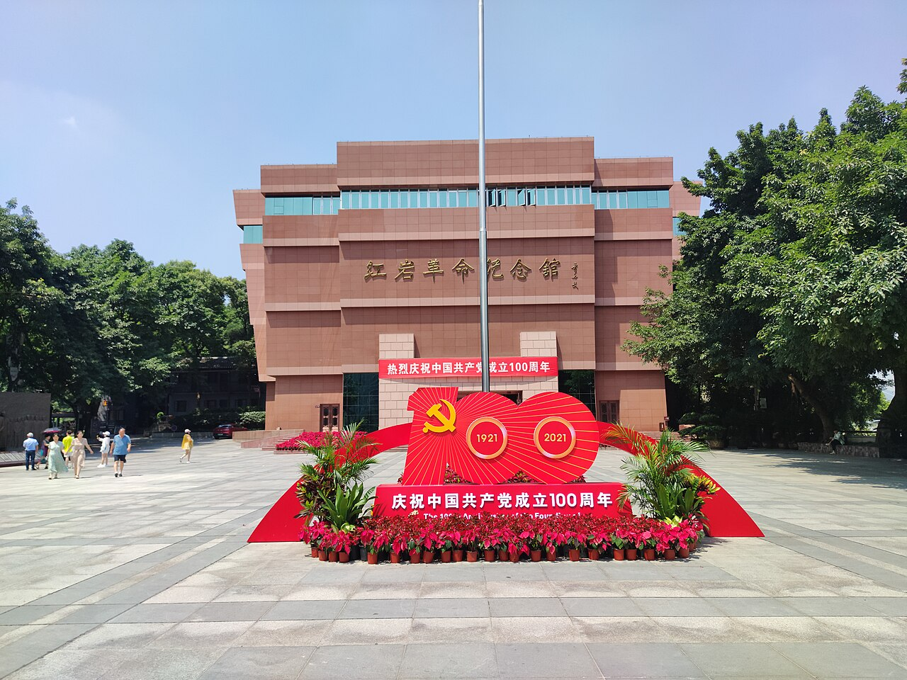
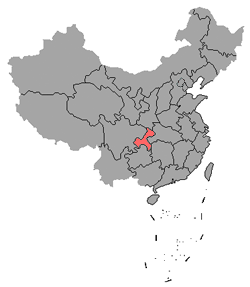

AI 智能讲解
按人物与旧址主题一键生成讲解，支持三种风格详略切换。
红色文化传播 × 数字展馆 × AI交互
让红岩精神从“被观看”走向“可交互、可感知、可传播”
按人物与旧址主题一键生成讲解，支持三种风格详略切换。
导览节点、历史意义、故事弹窗与 AI 讲解联动，形成完整参观路径。
通过快捷问答与互动挑战，让价值理解从阅读走向主动探索。

红岩精神形成于革命斗争实践，凝结了坚定理想信念、爱国奉献、百折不挠和团结奋斗的价值追求，是新时代青年奋进的重要精神资源。

无论环境多么艰险，都始终保持对革命理想与人民事业的忠诚。
把国家和民族利益置于个人得失之上，团结一切可以团结的力量。
面对高压与困境仍勇于斗争、善于斗争，展现革命者的精神风骨。
在严酷考验面前守住气节，宁折不弯，体现共产党人的崇高人格。
点击人物了解完整故事，或直接使用“AI 听他/她讲”快速进入讲解模式。
按“导览列表 → 历史信息 → 故事深读 → AI 讲解地点”路径完成一次线上参观。
讲解内容由馆内知识库生成，可根据主题与风格切换输出详略。
状态：等待生成
讲解结果
问答结果
通过“可看、可点、可问、可答、可参与”的方式，让红色文化传播从单向阅读走向主动体验。
HTML5 + CSS3 + JavaScript（静态站方案），采用本地 JSON 数据驱动各功能模块。
融合数字展馆叙事、AI讲解与互动问答，实现思想性、技术性与可用性的统一。
本站插图与史料图片均为可公开引用的授权素材；出处、作者与许可方式已汇总在 README「素材与引用来源」中，便于评审与复核。
地址：重庆工商大学南岸校区
电话：13538284240
邮箱：yyyymmm3157@gmail.com